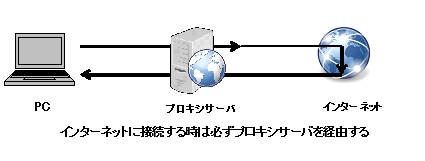

ファイアウォール
ファイアウォールとは
元々は火災などから建物を防御するための防火壁のことをいいます。 インターネットでは、外部のネットワークからのアクセスを検知し、その通信をさせるかどうかを判断し許可するまたは拒否する技術のことをファイアウォールと呼んでいます。 その通信を許可するか拒否するかの判断は通信の送信元とあて先の情報を見て決めているため、通信の中身を覗いて判断しているわけではありません。 PCを対象としたものはOSやウィルス対策ソフトに標準装備されています。他にはブロードバンドルータに備わっているものもあります。 企業等の大きいネットワークには専用の装置を利用しています。今回は2種類のファイアウォールを紹介します。
パケットフィルタリング型
発信元、宛先のIPアドレスとポート番号を監視し、ファイアウォールの通過の可否を決める機能です。 ユーザが使用するアプリケーションのサービスの窓口となる「ポート番号」でフィルタリングを行います。 HTTPや電子メール等のインターネットに必要なポート番号のみの通信を許可し、他のポート番号は拒否をする設定を行うことが多いです。 アプリケーションごとに通信の許可をしてしまうため、Webページや電子メールを許可している場合は、Webページや電子メールを使用した攻撃には対応ができません。
 図2 一般的なファイアウォール
図2 一般的なファイアウォール
アプリケーションゲートウェイ型
多くの企業が導入しているファイアウォールの一つで、HTTPや電子メールなどのサービスごとに代理にアクセスする「プロキシサーバ」があります。 HTTPや電子メールのデータはプロキシサーバを経由して通信を行うため、プロキシサーバによって不正なデータやコマンドをチェックすることができます。 プロキシサーバを活用することで、有害サイトのフィルタリング等の技術を実現することができます。 このように、内部ネットワークを出入りするアクセスを一元管理することで、安全にインターネットを利用することができます。
 図3 プロキシサーバ